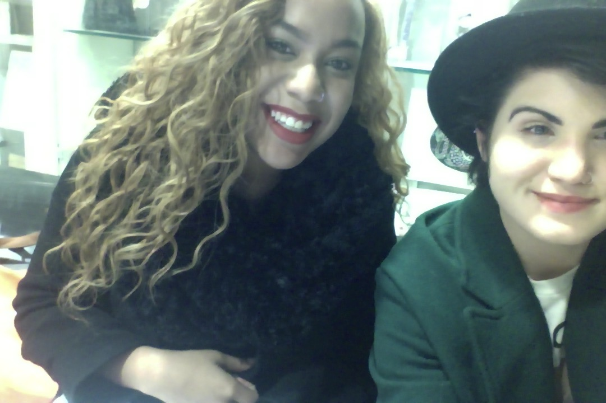

Planning design research is challenging.
Organization, a strong focus and team alignment are crucial.
OBJECTIVE: What do you want to learn?
A point of view that defines what you aim to learn in your research, in 1-2 sentences.
It will be interesting to learn about the benefits of having sex meanwhile drawing out an understanding of why people are so uncomfortable about this subject. To compare students’ sexual education and experiences based on geography, upbringing, sexuality, future aspirations and overall “mental health” will offer insight to us as researchers but also us as curious, young individuals, living in this same tight-lipped world.
WHERE: Where would you conduct the research?
Identify the primary context where you might observe the activities or have the conversations needed to address your objective. Consider cities, neighborhoods, public spaces, indoors and times of day, etc.
We will conduct the research at our school, including students and staff such as councelors and university health physicians. If time allows, we would like to visit New York public schools and interview their students and staff as well.
WHO: From whom do you want to learn?
Finding the right people is critical to the outcome of your research. List the key criteria that define the participants you seek. Consider age, gender, occupation, demographic, etc.
We want to learn from students and parents alike. Having a wide variety of old parents, young parents and students with both.
Also, we want to research the views that vary surrounding sex and sex education dependent on geographies; what public schools where are teaching what and how.
HYPOTHESES: What are some of your assumptions?
List things you already know and any other hypotheses on the participants that needs validation.
We hypothesized that teens and young adults, if given access to the health benefits of good and safe sex, will become invested in the positive, self-healing properties of their own bodies and not look towards drugs and alcohol to supplement negative emotions in these formative years of adolescence.

METHOD: How do you plan to learn?
Choose an appropriate research method from the examples shared in class, and describe your rationale. Note, in-context interview is mandatory.
We plan to gather our information through questionaires and interviews. Visual documentation will be recorded during the interviews via instant cameras and video. We want to reach a large demographic of people in this initial stage of research so that we may have a better understanding of our targeted age group when we begin desiging; face-to-face interviews will make the data collected feel more real.
What We Have Found . . .
People who have sex have higher levels of what defends your body against germs, viruses, and other intruders.